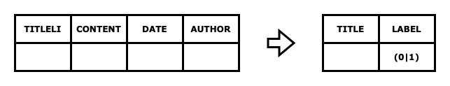
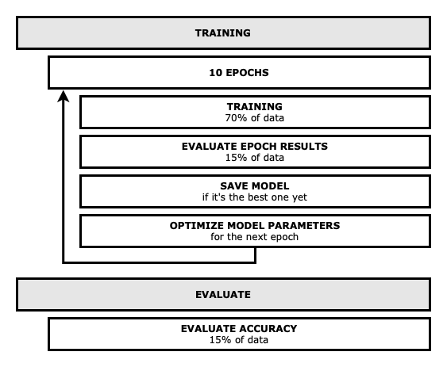

Machine Learning
cURL
Codecamp 2021
Team
Daniela
Marco
Yannick
Intro
Why?
Machine Learning
Interesting use case
Approach
Started with a Tutorial (English dataset)
Train own model with German data
Use the trained model
How does it work?
BERT
todo
Training process
Prepare data

CSVs into
pandas
dataframes
Adjust columns
Split data
Using
scikit-learn
Word Distribution
Plot word distribution using
matplotlib
Cut to 15 words
Tokenize
BERTTokenizer from
transformers
Convert words to numeric values
Convert numeric matrices to Tensors with
pytorch
Training

Train and store the model (
pytorch
,
scikit-learn
)
Result: Model as
.pt
file
Inference
Result: [0.8635212, 0.1364788] # Probability real news: 86.4 % # Probability fake news: 13.6 %
Demo
Learnings
Training an English model is easier than German
Fake news detection is checking wording, not content
Getting good data is hard
Understanding Machine Learning in 5 days is difficult :)
Questions?